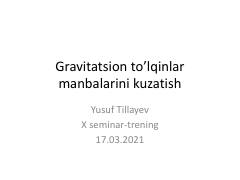

GTGravitatsion to'lqinlar va ularni kuzatish usullari haqida ilmiy seminar-trening materiallari.
Ushbu qo'llanma gravitatsion to'lqinlar tabiati, ularni aniqlash usullari va tarixiy kuzatuvlar haqida ma'lumot beradi. Unda kompakt obyektlar, yulduzlar evolyutsiyasi va gravitatsion to'lqinlar detektorlarining ishlash prinsiplari ilmiy nuqtai nazardan tushuntirilgan.